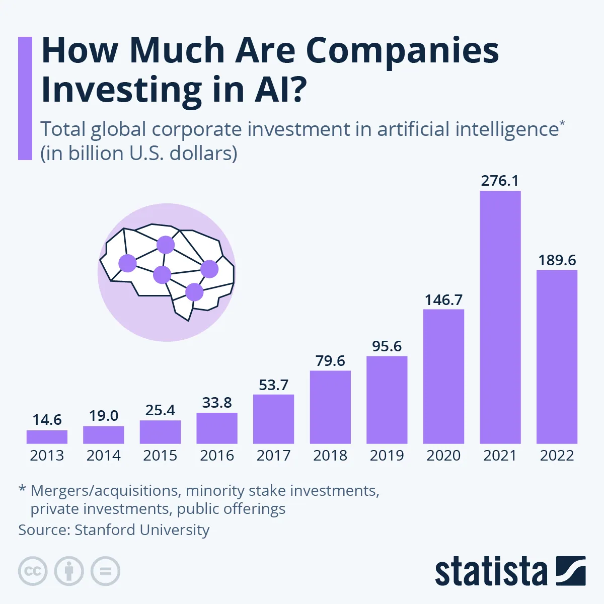
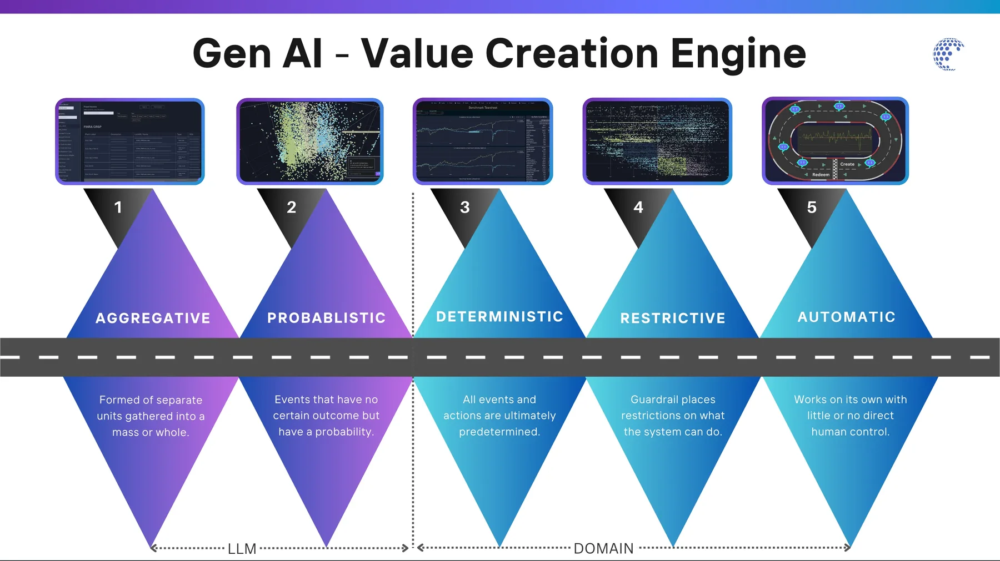
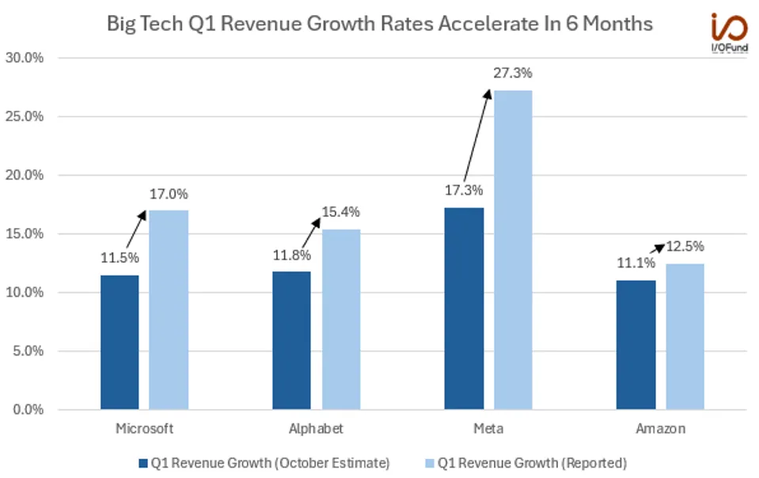
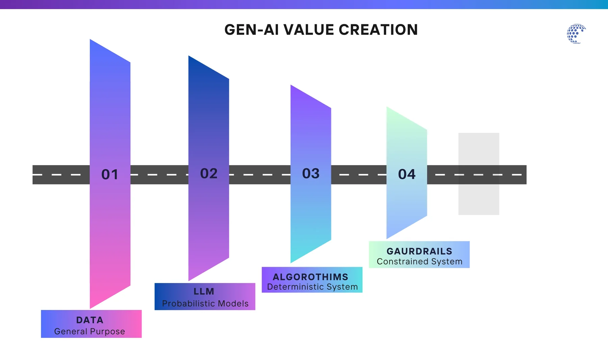

In Search of the Gen-AI Business Model. The Next Phase of Gen-AI's Monumental Value Creation.
Over the past year, generative AI's ability to create content has dominated headlines, showcasing its potential to instantly generate text, images, and videos. This has captivated public interest and demonstrated the technology's creative prowess. However, the more impactful real-world use cases and valuable business applications of generative AI have received less attention. Beyond flashy demonstrations, generative AI can transform industries by optimizing processes, enhancing decision-making, and uncovering insights from vast datasets in fields such as healthcare, finance, and manufacturing. These practical applications hold the promise of significant advancements and tangible benefits for businesses and society.
In the past two years, we've witnessed significant investments from companies like Microsoft, Nvidia, Google, IBM, Apple, Meta, Amazon and Tencent, along with startups like OpenAI, Anthropic, and Mistral. Venture capital firms such as Sequoia, Kleiner Perkins, Andreessen Horowitz (A16Z), and M12 have also poured substantial capital into this technology. According to the Stanford University Artificial Intelligence Index Report 2023, around a trillion dollars has been invested so far, with very limited immediate returns in business value creation. We understand these are still early days.

Startups continue to search for the ultimate business model. This insightful article from VC firm Andreessen Horowitz (A16Z) "How Gen AI-Based Software Is Advancing Marketing and Sales." presents a compelling vision for marketing in this evolving landscape.
"Marketing is particularly well suited for adopting generative AI because it is an iterative, creative, and dynamic practice that relies on the types of media — texts, images, video — that have driven LLM development. (This is one of the reasons why many of the first B2B GenAI use cases were for marketing!) Plus, successful marketing plans and assets don't necessarily have a single "right" solution. This makes marketing different from, say, fintech, where users expect a single, correct answer to queries and there's a higher threshold for accuracy."
The next evolutionary step in AI will be to bridge the gap from probabilistic models (like LLMs) to a hybrid of probabilistic and deterministic systems. There are five stages in this progression: Aggregative, Probabilistic, Deterministic, Restrictive, and Automatic. Currently, we are primarily operating within the first two stages, the aggregative and probabilistic phases.
Deterministic systems produce fixed, predictable outcomes based on initial conditions and rules, making them precise and reliable but less flexible. Examples include classical mechanics and fixed algorithms. In contrast, probabilistic models handle uncertainty by generating variable outcomes with associated probabilities, as seen in weather forecasting and stock market analysis. These models are adaptable and suitable for real-world scenarios but offer less precision and can be complex to interpret. Deterministic systems excel in controlled environments, while probabilistic models are ideal for situations involving uncertainty.
The monumental value lies in incorporating the deterministic phase. Why? For over 75 years, the significant advancements and value generated by computing systems have come from deterministic systems that closely mimic real-world problems and solutions. As we enter the realm of probabilistic computing, the next phase promises to be incredibly exciting and transformative.

The next step in AI involves fusing probabilistic models, such as Large Language Models (LLMs), with deterministic systems to create a hybrid approach. Probabilistic models excel at handling uncertainty and making predictions based on data patterns but lack the precision and reliability needed for certain complex tasks. By integrating deterministic systems, which rely on predefined rules and algorithms to guarantee specific outcomes, we can achieve a more robust and versatile AI. This hybrid approach will enable AI to not only predict and analyze with high accuracy but also execute tasks with a level of certainty and consistency that mirrors real-world problem-solving. This fusion of methodologies promises to unlock monumental value, driving advancements across various sectors and leading to groundbreaking innovations in AI applications.
Generative AI (Gen AI) has transformative potential across various sectors, but its most critical use case is in the financial sector, which comprises 30% of the economy. The financial sector's complexity, data intensity, and need for precision make it a challenging domain for AI. Solving these challenges with Gen AI can lead to significant real-world value and broader adoption across other sectors.
Gen AI Application in Finance
- Advanced Data Analytics: Predictive analytics and NLP for market trends and insights.
- Fraud Detection: Anomaly detection and behavioral analysis.
- Regulatory Compliance: Automated reporting and RegTech solutions.
- Customer Service: AI-driven chatbots and personalized financial advice.
- Portfolio Management: Robo-advisors and sentiment analysis.
- Algorithmic Trading: High-frequency trading and quantitative models.
Impact on other sectors
Gen AI's success in finance can enhance other sectors, leading to more efficient, secure, and innovative real world adoption.
- Healthcare: Financial stability and efficient fund management can lead to better resource allocation and patient care.
- Retail: Enhanced fraud detection and personalized services can improve consumer trust and satisfaction.
- Manufacturing: Efficient risk management and investment in innovative technologies can boost productivity and innovation.
- Logistics: Predictive analytics can streamline operations and reduce costs.
- Energy: Efficient energy exploration, extraction and distribution will give boot to the broader economy.
- Transportation: Autonomous driving is already a thing, and predictability will be the key to future fleets.
By addressing the toughest challenges in the financial sector, Gen AI will establish a robust framework that can be adapted and applied to other industries, ultimately leading to more efficient, secure and innovative solutions on a global scale.
Industry CapEx challenges necessitate the search for a Gen-AI business model.
The high costs associated with industry capital expenditures (CapEx) are driving the urgent need for a viable Gen-AI business model. Generative AI (Gen-AI) has the potential to optimize processes, reduce costs, and unlock new revenue streams, but requires a sustainable model to demonstrate clear returns on investment.
Integrating Gen-AI's advanced capabilities with existing operations, especially through a hybrid approach combining probabilistic models with deterministic systems, can create significant value. This model can help businesses manage CapEx efficiently, leverage AI-driven innovations, and drive growth and competitiveness. Developing such a Gen-AI business model is essential for addressing industry CapEx challenges and achieving long-term success.
The first ray of hope is on the horizon, as this analysis of the tech sector from the Forbes article shows, "Big Tech Q1 Earnings: AI Capex Increases As AI-Related Gains Continue"

Source: I/O Fund, Company filings.
We are still in the early stages of Gen-AI development, merely scratching the surface of its potential. The true value will emerge in the next phase of this evolution, where we combine probabilistic models with deterministic systems. This hybrid approach promises to unlock monumental value by solving complex problems, such as those in the financial sector, leading to unprecedented real-world solutions and innovative business models.

We strongly believe that if we can crack the code of Gen-AI in finance, we can unlock the potential to revolutionize any sector of the economy. The complexities and data-rich environment of the financial industry provide the perfect testing ground for advanced Gen-AI technologies. Mastering Gen-AI in this field will equip us with the tools and insights necessary to drive innovation and efficiency across various industries, paving the way for a smarter, more efficient economy.
In this series, we will explore a financial use case, demonstrating how Gen-AI can revolutionize the industry. Over the next three posts, we will delve deep into this use case to build a compelling argument for broader Gen-AI adoption. By addressing challenging financial sector problems, we aim to illustrate the transformative power of AI and its potential to drive significant advancements across various industries.
Gen-AI: Business Model - "Unlocking Gen-AI's True Potential: The Next Phase of Monumental Value Creation"
Finance series: Part 1 - "The Impact of Generative Ai Models: Revolutionizing Relative Value Analysis in Securities Markets"
Finance series: Part 2 - "AI Guardrails, Precise Boundary and Tearsheets can Transform Value Creation in Financial Markets"
Finance series: Part 3 - "AI Agents in Finance: How Relative Value Analysis and Tearsheets Pave the Way for AI Copilots and Autonomous Intelligent Agents"